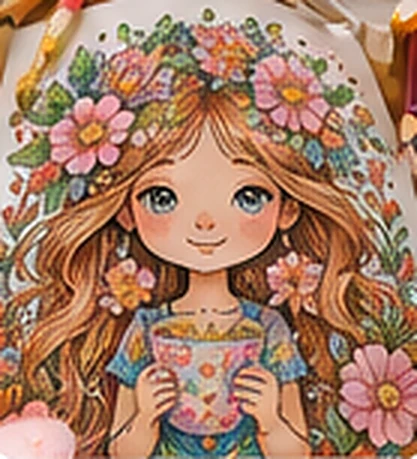
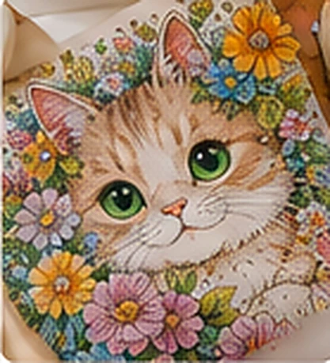
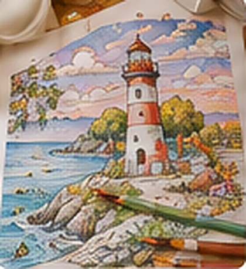
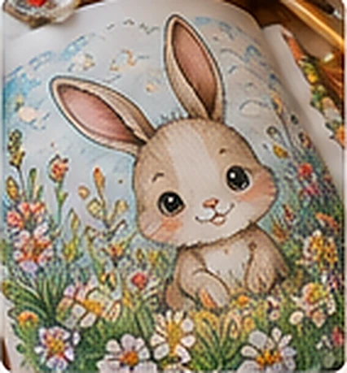
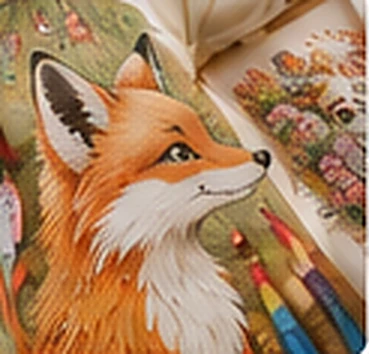

COLORING CLUB
Moderacja prac
Przeglądaj i zatwierdzaj prace przesłane przez użytkowników.
Średni czas: 4 godz.
Oczekujące7Do weryfikacji
Zatwierdzone128Widoczne publicznie
Odrzucone9Historia zgłoszeń

Wiosenne marzenia@artbyanna · Flower DreamsDzisiaj, 10:42

Mały przyjaciel@paperandpetals · Cozy CreaturesDzisiaj, 09:17

Letnie wspomnienia@marta.makes · Coastal EscapesWczoraj, 18:31

Łąka o poranku@colorbymia · Woodland StoriesWczoraj, 15:09

Lis w kwiatach@colorsbyjo · Woodland Stories23 października
Oczekuje na decyzję
1 z 7Wiosenne marzenia
Flower Dreams
Spokojne popołudnie z kolorowanką. Najbardziej lubię dobierać kolory kwiatów.
Dziś, 25.10.2026 · 10:42
Sprawdź, czy zdjęcie nie zawiera danych osobowych ani wizerunków dzieci.
Wszystkie działania moderacyjne są zapisywane w historii.